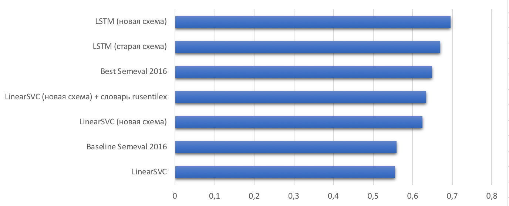

<h5 style="padding-bottom: 0px; margin-bottom: 0px;">Результаты исследований: определение аспектов</h5>
<!---->
<canvas data-chart="horizontalBar">
F1_macro, 0.5472, 0.5588, 0.635, 0.6483, 0.6693, 0.6953
<!--
{
 "data" : {
  "labels" : ["LinearSVC", "Baseline Semeval 2016", "LinearSVC + комбинирование классификаторов", "Best Semeval 2016", "LSTM", "LSTM + комбинирование классификаторов"],
  "datasets" : [{ "backgroundColor": "#3366CC" }]
 },
 "options": {"responsive": true, "legend": {"display": false}, "scales": {"xAxes": [{"scaleLabel": {"display": true,"labelString": "F1_macro", "fontSize": 18}}]}}
}
-->
</canvas>